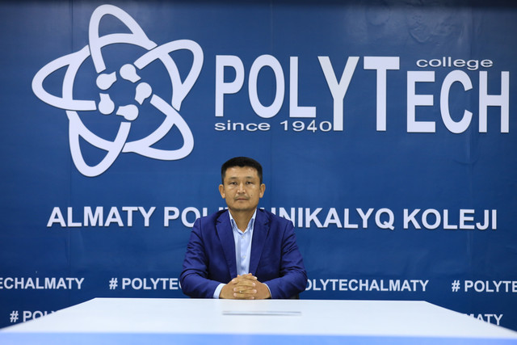
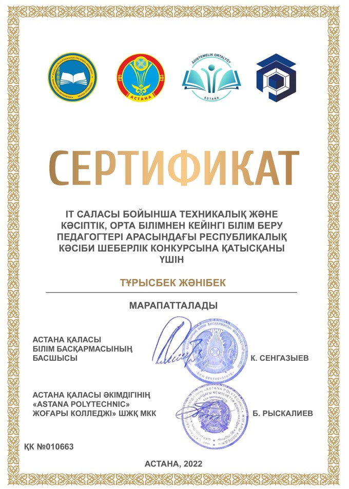
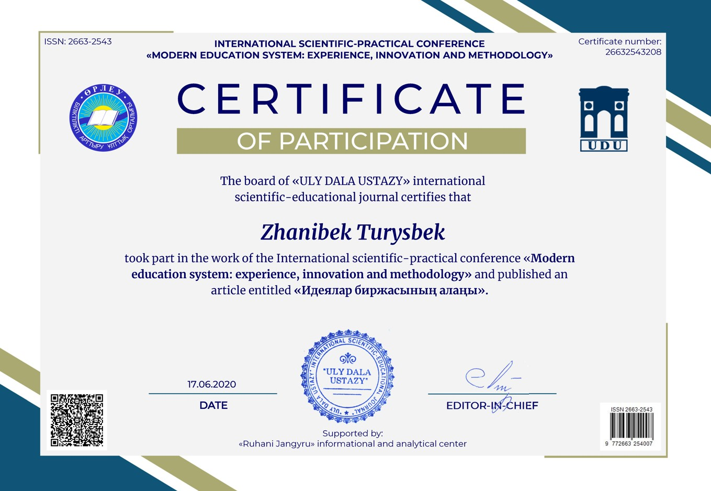
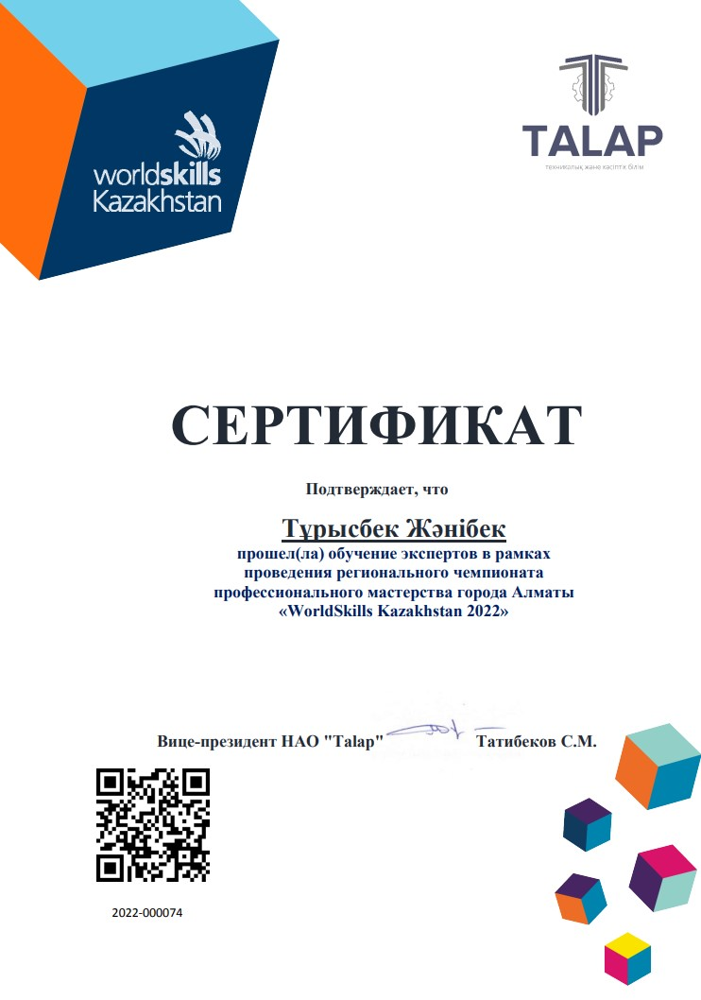
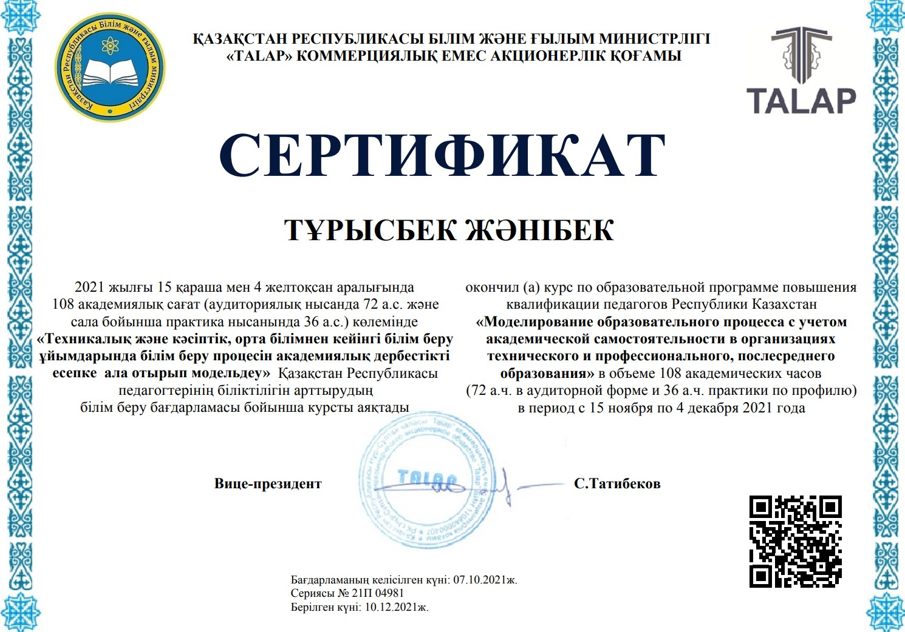
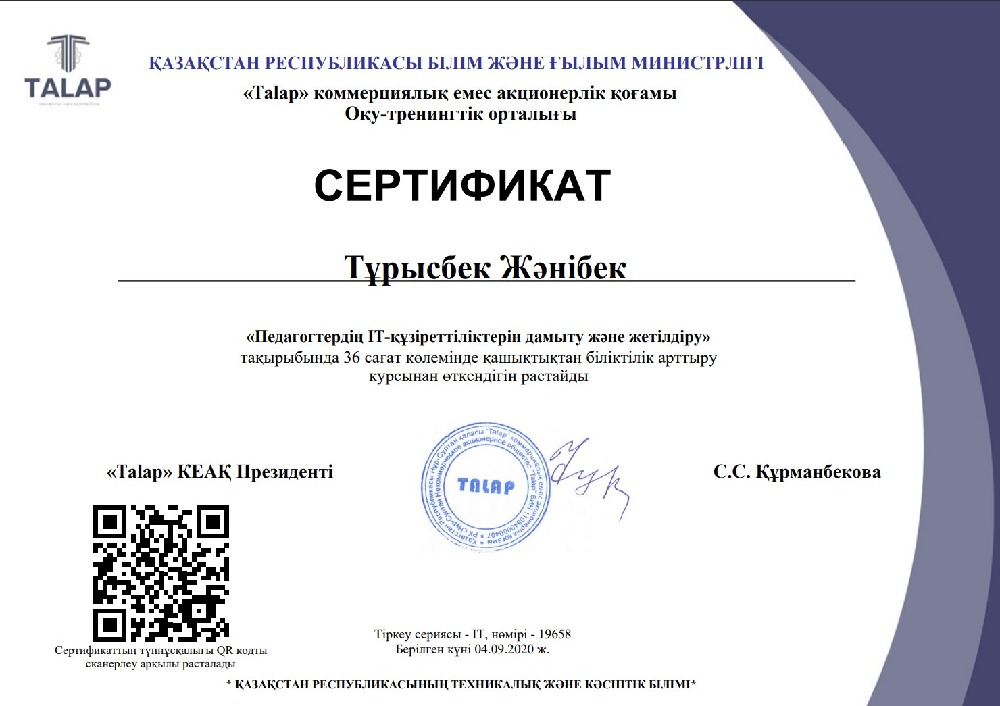
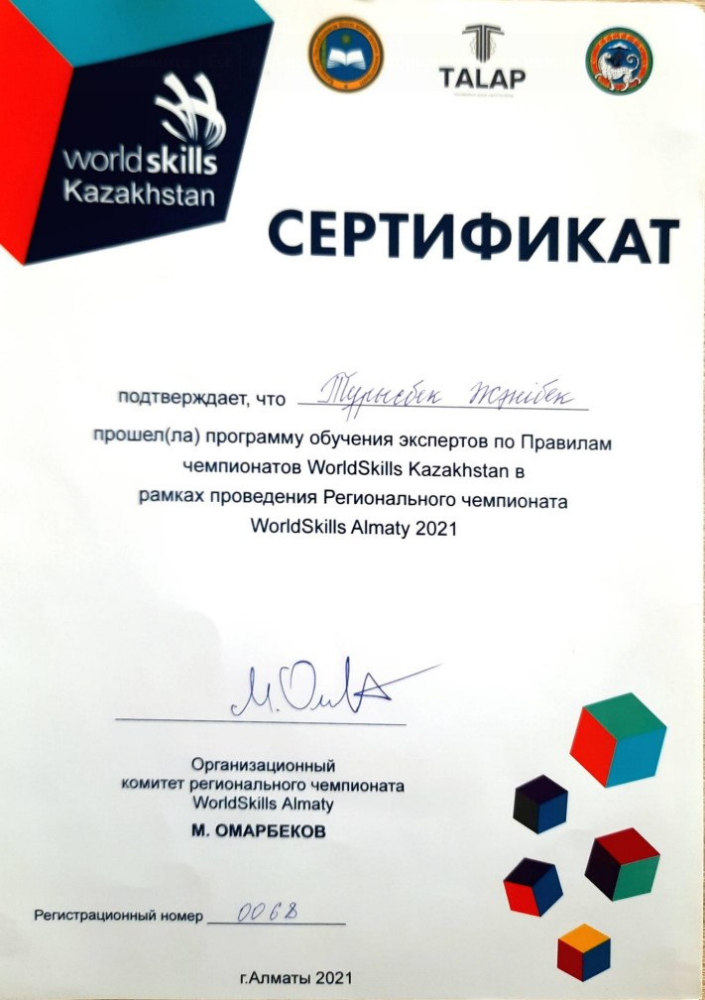
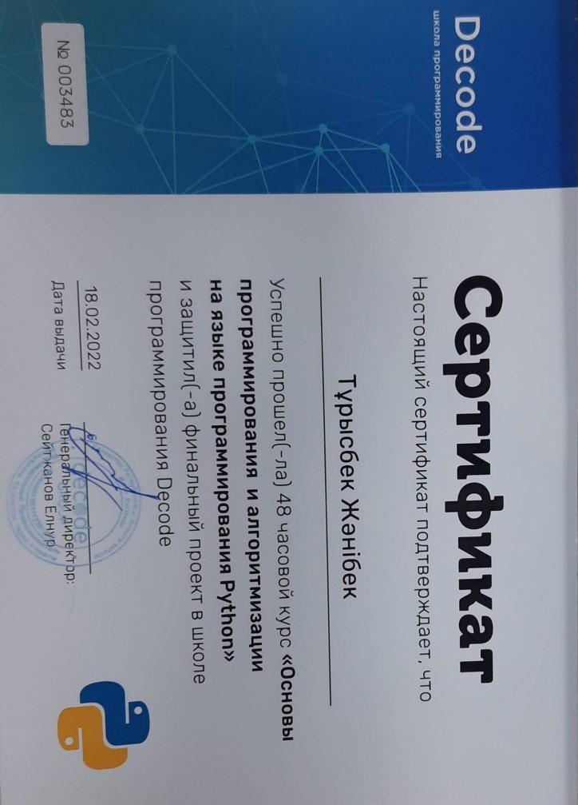
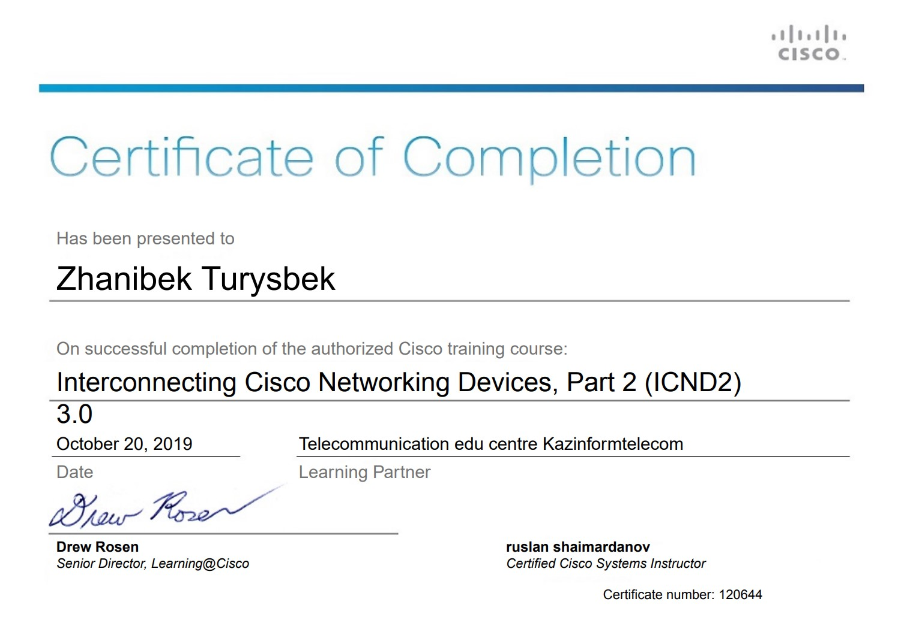

Резюме✍

Жәнібек Тұрысбекұлы
Арнайы пәндер оқытушысы
Жәнібек Тұрысбекұлы 08.11.1987 жылы ҚХР Шәуешек қаласында дүниеге келген. Білімі-жоғары 2007-2011жылдар аралығында Қ.И.Сәтбаев атындағы қазақ ұлттық техникалық университетінің «Есептеу техникасы және бағдарламалық қамтамасыз ету» мамандығы бойныша бакалавр, 2011-2013 Қ.И.Сәтбаев атындағы қазақ ұлттық теникалық зерттеу университетінің «Есептеу техникасы және бағдарламалық қамтамасыз ету» мамандығының магистранты. 2011 ҚазҰТУ инженері, 2013-2021Алматы энергетика және байланыс университетіңі оқытушысы. 2021 жылы қыркүйек айынан бастап Алматы мемлекеттік политехникалық колледжінде арнайыпәнінің мұғалімі қызметін атқарып келеді.
Марапаттары







